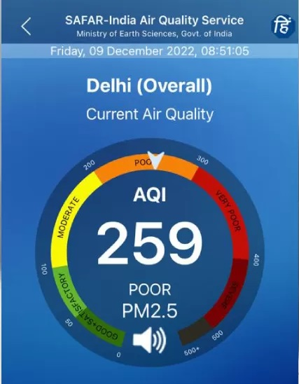
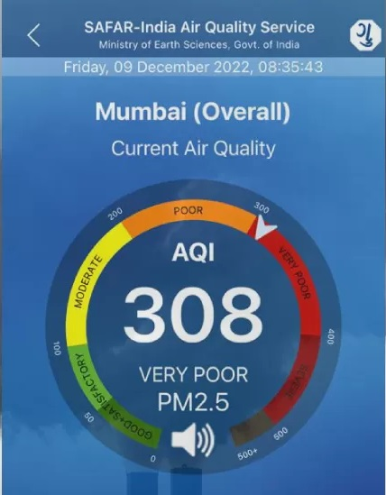

Mumbai AQI: Air in India's financial capital getting worse than smog-filled Delhi
India's financial capital Mumbai has been witnessing "very poor" air quality in recent days.
It's capital Delhi that usually makes headlines for having dangerous levels of air pollution during the winter months.
But Mumbai, which has a vast coastline and is considered to have better air quality, overtook Delhi pollution levels several times this week.
Mumbai has joined a growing list of Indian cities that have bad air.
Experts say rapid construction, adverse weather conditions and increasing pollution from vehicle emissions are some of the factors responsible for the deteriorating air quality.
The level of PM 2.5 - fine particulate matter that can clog lungs and cause a host of diseases - was 308 in the city on Friday morning at 8.30am [local time], compared to Delhi's reading of 259, according to government data.
Levels between 200 to 300 are considered poor and any reading between 300 to 400 is categorised as very poor. Many Indian cities, including Delhi, Kolkata, Kanpur and Patna, often report PM 2.5 levels well above the safe limit.
A figure between zero and 50 is considered "good", and between 51 and 100 is "satisfactory", according to the the air quality index or AQI.

'It's harder to breathe'
I woke up this morning feeling two things: it was colder than usual, and I was finding it slightly harder to breathe. The latter, I learnt later, was because Mumbai's air quality had entered the "very poor" category.
Just last week, I'd travelled to Delhi - a city known for its bad air. As you touch down in the city, you feel the difference. The air is heavier and you immediately notice pollution. Every breath comes with a little more effort. I was quite happy to return to Mumbai at the end of the week.
But today, the citizens of Mumbai found themselves in the same boat. In fact, our air is worse.
Meanwhile, local hospitals in Mumbai have reported an increase in the number of people coming in with breathing difficulties and other ailments related with poor air quality.
Doctors have advised people to wear masks and avoid going out when not necessary. Mumbai's civic officials say they are taking urgent steps to improve the air quality.
Bad air quality in Indian cities is causing serious health issues to people. A Lancet study reported that pollution led to more than 2.3 million premature deaths in India in 2019.